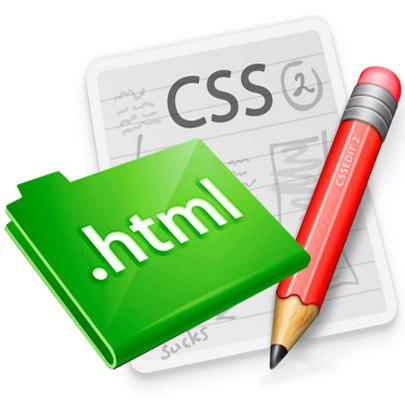

Верстка это процесс создания файла с расширением .html (HyperText Markup Language), размещающего элементы веб-страницы (изображения, текст и т. д.) в окне браузера, в соответствии с разработанным макетом, таким образом, чтобы элементы дизайна выглядели аналогично изображенным на макете (ссылка на википедию). Современная верстка включает в себя также и обеспечение оговоренного в ТЗ поведения элементов веб-страницы.
Для обеспечения идентичности макету используется стилизация html-кода. Для стилизации используется код, размещаемый в файлах формата .css (Cascading Style Sheets). Необходимо отметить, что css-стили применяются не только к html-коду, но и к xml, svg.
Для создания поведения (реакции элементов на действия пользователя, загрузку страницы и т.д) используется язык программирования javascript (ECMAScript). Возможности этого очень мощного языка выходят далеко за пределы верстки, верстальщик использует лишь малую их часть. Язык javascript используется верстальщиком чаще всего в связке с библиотекой jQuery.